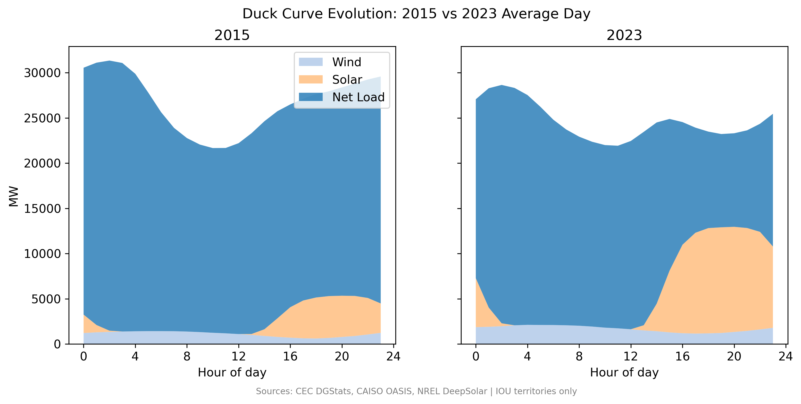
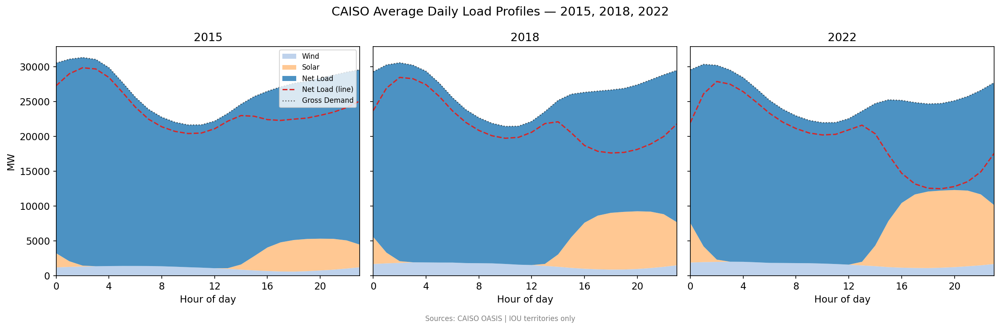
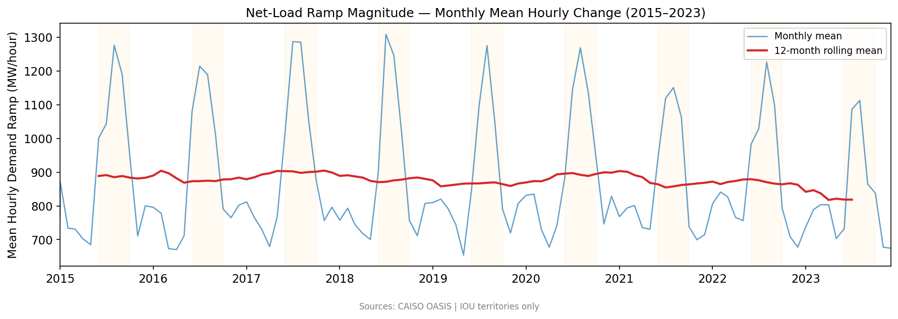

5. How the Grid Changed: The Duck Curve and Net-Load Dynamics (2015–2023)#
5.1. The Duck Curve Transition#
{kind=link}

Fig. 5.1 California’s grid experienced a dramatic shift in its net-load curve (demand minus utility-scale renewables) between 2015 and 2023. This transition, colloquially termed the “duck-to-canyon” evolution, has significant operational implications for grid operators.#
5.1.1. 2015: The Emerging Duck#
In 2015, utility-scale solar generation peaked at ~2 GW around midday. The net-load curve retained a relatively smooth, predictable shape—a gentle hump during morning ramp-up, a valley during midday, and steady evening demand.
5.1.2. 2023: The Canyon#
By 2023, utility-scale solar alone peaked at ~13 GW. Combined with wind and other renewables, net load dropped to near-zero during midday hours (11 AM–3 PM). The evening transition became sharp: as solar generation dropped after 6 PM, demand ramped from near-zero to ~15 GW in just a few hours. This steep ramp creates a grid-operations challenge: matching supply to rapid demand changes.
5.2. Hourly Profiles Across the Decade#
{kind=link}

Fig. 5.2 Examining average daily load profiles at three time points reveals the progression:#
2015: Solar generation (orange) is a modest contribution; net load (red dashed) is smooth and predictable.
2018: Solar generation doubled; the midday dip became more pronounced.
2022: Solar generation hit 13 GW at peak; the net-load curve resembled a canyon or bathtub—flat and low midday, with sharp walls in the morning and evening.
This evolution is driven by both:
Utility-scale solar growth (Mojave Desert, Central Valley large-scale projects)
Distributed BTM solar growth (visible in adoption heatmap), which is implicit in the metered demand
5.3. Quantifying Grid Stress: Ramp Magnitude#
{kind=link}

Fig. 5.3 Net-load ramp magnitude (mean hourly change in demand) increased over 2015–2023, with pronounced seasonal spikes in summer. Summer peaks reflect two factors:#
High solar generation (more ramp-down at sunset)
High peak demand (more evening ramp-up as air conditioning kicks in)
This metric captures the operational challenge of matching supply to sharp demand changes. A larger ramp requires faster generator response or battery discharge, both costly and technically challenging.
5.4. Data Sources#
CAISO OASIS API: Hourly system demand, utility-scale renewable generation (fuel type), 2015–2023
CEC Monthly Generation Report: Annual renewable generation by fuel
Granularity: System-level (entire CAISO interconnection)
Note: System-level data does not vary by ZIP code or utility territory
5.5. Caveats#
The duck curve and net-load ramp are system-wide metrics. They reflect aggregate California grid behavior, not local distribution-network constraints. Feeder-level voltage and frequency data (required to measure local hosting-capacity limits) are not publicly available.